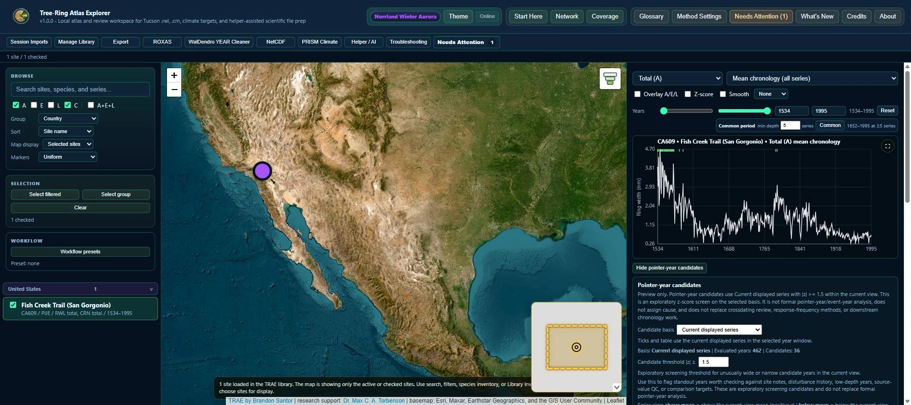

Tree-Ring Atlas Explorer
Offline-first discovery, screening, and organization of tree-ring records with climate context for Torbenson Lab.
Read the case study ↓



The problem
Tree-ring measurements, site metadata, and climate records were scattered across collections, making consistent discovery and comparison difficult.
My role, data & method
I created an offline-first research application for locating, screening, comparing, and organizing tree-ring records with climate context. I implemented reviewed imports, site-to-climate matching, provenance tracking, and reproducible exports for downstream analysis.
What I found
The prototype led to a paid research assistant appointment in Torbenson Lab. I used TRAE to derive, clean, organize, and export data for a co-authored manuscript in preparation. Climate comparisons are exploratory screening, not validated climate reconstructions.
Two ways to bring records into the workspace
Researchers can temporarily import tree-ring files for inspection or use a reviewed workflow to add reusable records to a managed library. Saved .TRAE sessions retain the working view, temporary imports, climate choices, checked sites, and notes. This supports quick inspection and longer-running research without treating every imported file as a permanent library record.
Measurement and chronology identity
Total ring width, earlywood, and latewood measurements remain separate from imported CRN chronology records. Managed imports expose parser warnings, measurement-scale questions, source-identity conflicts, and metadata gaps for researcher review. Source hashes and import records support traceability, while managed copies preserve the original files.
Geographic and climate screening
Site selection connects maps, charts, and summaries. Researchers can display selected sites, filtered results, or the loaded collection, with marker sizing for chronology length or series counts. Climate Builder turns monthly observations into annual or seasonal targets with explicit aggregation, year assignment, and completeness settings.
Handoffs into analysis
Long and wide tables, geographic site data, screening reports, and analysis bundles support downstream work in R, Python, and MATLAB. Method settings, units, and provenance travel with the outputs. Site means, adjusted-latewood residuals, EPS estimates, and climate correlations support exploratory screening and require subsequent chronology development and validation for reconstruction work.